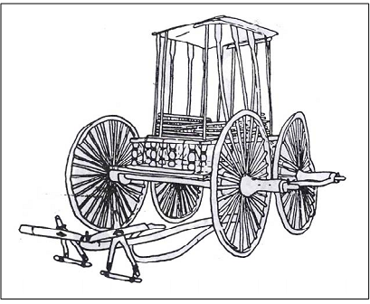
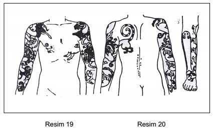

Levha 10

Resim 18: Cenaze arabası, V. Pazırık Kurganı(T. T. Rice; The Scythians, Thames and Hudson, London, 1958, Resim 30).

Resim 19: Mumyalanmış cesedin vücudundaki dövmeler, II. Pazırık Kurganı
(T.T. Rice, aynı eser, resim 27).
Resim 20: Mumyalanmış cesedin sağ bacağı üzerindeki dövmeler, II. Pazırık Kurganı
(T.T. Rice, aynı eser, resim 28).[191]